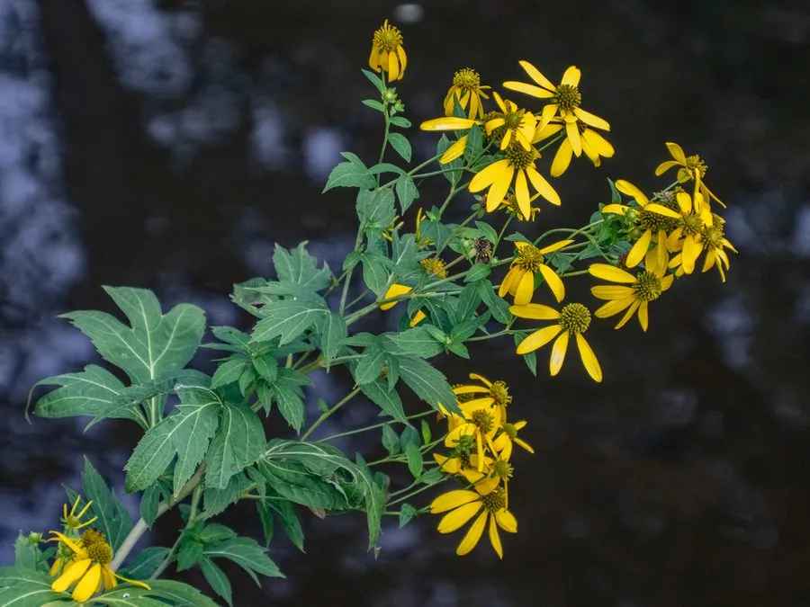

花卉与草本 · 植物界
金光菊 Rudbeckia laciniata

菊科多年生草本，金黄色舌状花向后翻卷、花心隆起，株型高大，是花境中明亮的秋季花卉，原产北美。
- 分类
- 门被子植物门纲木兰纲目菊目科菊科属金光菊属
- 栖息环境
- 北美湿润草甸与河岸，喜光、喜湿、耐寒
- 地理分布
- 原产北美洲，中国各地庭园引种栽培
- 保护级别
- 暂无评估
物种志
金光菊为菊科金光菊属多年生草本，株高 1–2 米，茎直立，多分枝。叶片羽状深裂，裂片有锯齿。头状花序单生或数个聚生，直径 5–10 厘米，舌状花金黄色、向下翻卷，中央管状花黄绿色、隆起，花期 7–9 月；果实为瘦果。
金光菊原产北美洲的湿润草甸和河岸，喜阳光充足、湿润和排水良好的环境，耐寒性较强，适应性强。它株型高大、花金黄明快，是花境中明亮的秋季花卉，适合布置在花境后景和水岸；同属的重瓣品种常被称为“重瓣金光菊”。栽培以分株和播种为主，花后剪去残花可促进二次开花。
形态与习性
- 株高1–2 米，茎直立多分枝
- 花期7–9 月
- 果期花后结瘦果
- 光照喜充足阳光
- 水分喜湿润，忌积水
- 土壤疏松肥沃、排水良好的壤土
- 繁殖分株、播种
- 主要用途花境后景、水岸布置、切花
趣味知识
- 金光菊的舌状花金黄色、向下翻卷，中央管状花黄绿色隆起。
- 它株型高大，适合布置在花境后景和水岸。
- 金光菊原产北美湿润草甸，耐寒且适应性强。
- 花后剪去残花可促进二次开花。